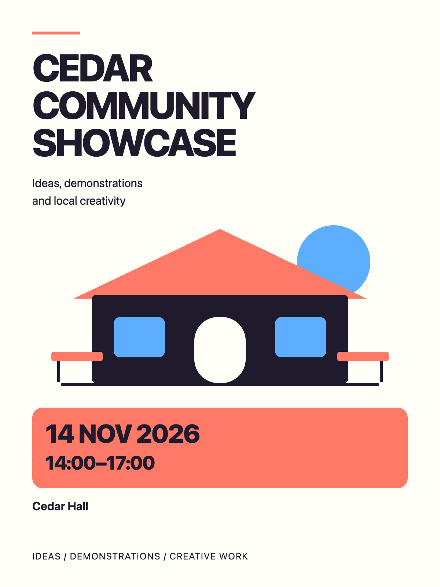

完整参考成果 · 预先编制的教学示例
宣传图制作与修改
以下为内置图像工具生成的虚构活动参考图，可直接打开原尺寸。文字与图像一起生成后仍须逐项核对。



检查与修改记录
原始需求见 creative-brief.md。修改要求只强调日期与时间，保持标题、地点、活动性质和无报名声明。没有加入真实品牌、联系人或人数承诺。
完整参考成果 · 预先编制的教学示例
以下为内置图像工具生成的虚构活动参考图，可直接打开原尺寸。文字与图像一起生成后仍须逐项核对。

原始需求见 creative-brief.md。修改要求只强调日期与时间，保持标题、地点、活动性质和无报名声明。没有加入真实品牌、联系人或人数承诺。